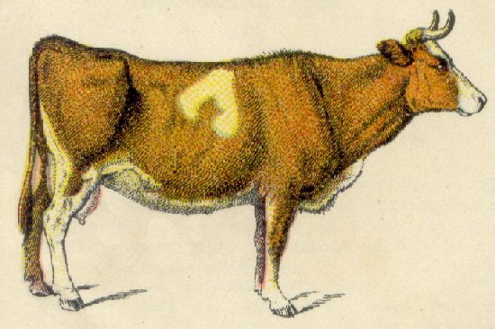

Friday, March the 28th, 2008
back to: title, date or indexes

Cut around the edges of the cow with a sharpened pair of scissors, then keep it on your mantelpiece or in a glass-fronted display cabinet.